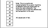
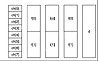
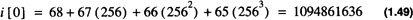

by Alan Parker
CRC Press, CRC Press LLC
ISBN: 0849371716 Pub Date: 08/01/93
|
|
Algorithms and Data Structures in C++
by Alan Parker CRC Press, CRC Press LLC ISBN: 0849371716 Pub Date: 08/01/93 |
| Previous | Table of Contents | Next |
This section presents an example combining ASCII, floating point, and integer types using one final C++ program. The program is shown in Code List 1.15 and the output is shown in Code List 1.16.
The program utilizes a common memory location to store 8 bytes of data. The data will be treated as double, float, char, int, or long. A particular memory implementation for this program is shown in Figure 1.2.

Figure 1.2 Memory Implementation for Variable t

Figure 1.3 Mapping of each Union Entry
The organization of each union entry is shown in Figure 1.3. For the union declaration t there are only eight bytes stored in memory. These eight bytes can be interpreted as eight individual characters or two longs or two doubles, etc. For instance by looking at Table 1.8 one sees the value of ch[0] which is 0×41 which is the letter A. Similarly, the value of ch[1] is 0×42 which is the letter B. When interpreted as an integer the value of i[0] is 0×41424344 which is in 2’s complement format. Converting to decimal one has i[0] with the value of

If one were to interpret 0×41424344 as an IEEE 32-bit floating point number its value would be 12.1414. If one were to interpret 0×45464748 as an IEEE 32-bit floating point number its value would be 3172.46.
Code List 1.15 Data Representations
Code List 1.16 Output of Program in Code List 1.15
There are only one’s and zero’s stored in memory and collections of bits can be interpreted to be characters or integers or floating point numbers. To determine which kind of operations to perform the compiler must be able to determine the type of each operation.
| Previous | Table of Contents | Next |
){kind=link}
){kind=link}
){kind=link}
){kind=link}
){kind=link}
){kind=link}
){kind=link}